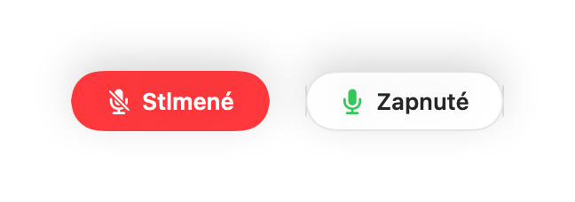

Ako stlmiť Webex z ľubovoľnej aplikácie na Macu
Klávesová skratka na stlmenie vo Webex funguje len vtedy, keď je Webex v popredí, a pri zdieľaní obrazovky sa jeho ovládacie prvky skryjú.
Muffle stlmí váš mikrofón odkiaľkoľvek na Macu, takže videohovor alebo stretnutie vo Webex stlmíte bez prerušenia toho, na čom pracujete.
Stlmenie Webexu odkiaľkoľvek
- 1
Nainštalujte Muffle a povoľte prístup k mikrofónu.
- 2
Pripojte sa na stretnutie vo Webex.
- 3
Stlačením Control-Option-M alebo stopky AirPods mikrofón stlmíte.
- 4
Zapnite plávajúci mini ovládač, aby ste videli stav mikrofónu aj pri zdieľaní obrazovky.

- Webex môže stále ukazovať, že mikrofón je zapnutý. Účastníci však počujú ticho, kým je ikona Muffle červená.
- Pri veľkých konferenciách zapnite funkciu „Začínať každý hovor so stlmeným mikrofónom“.
Časté otázky
Funguje Muffle s Webexom v prehliadači?
Áno. Vypína priamo mikrofón na hardvérovej úrovni, takže spoľahlivo funguje s akýmkoľvek klientom Webex.
Dá sa Webex stlmiť cez AirPods?
Áno, počas stretnutia stačí stlačiť stopku. Klávesová skratka funguje s ľubovoľným headsetom.